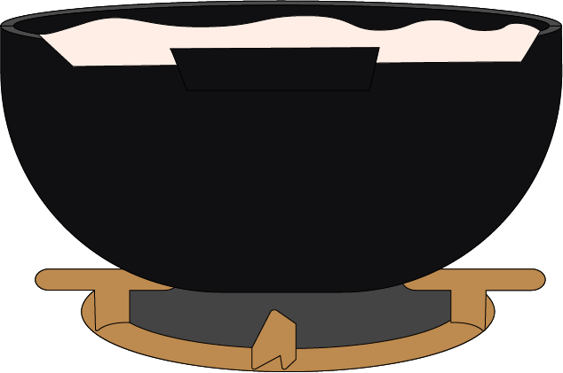
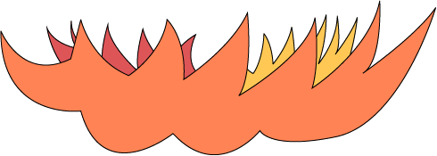
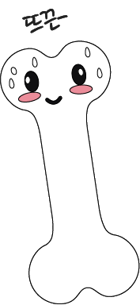
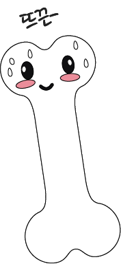
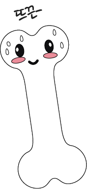
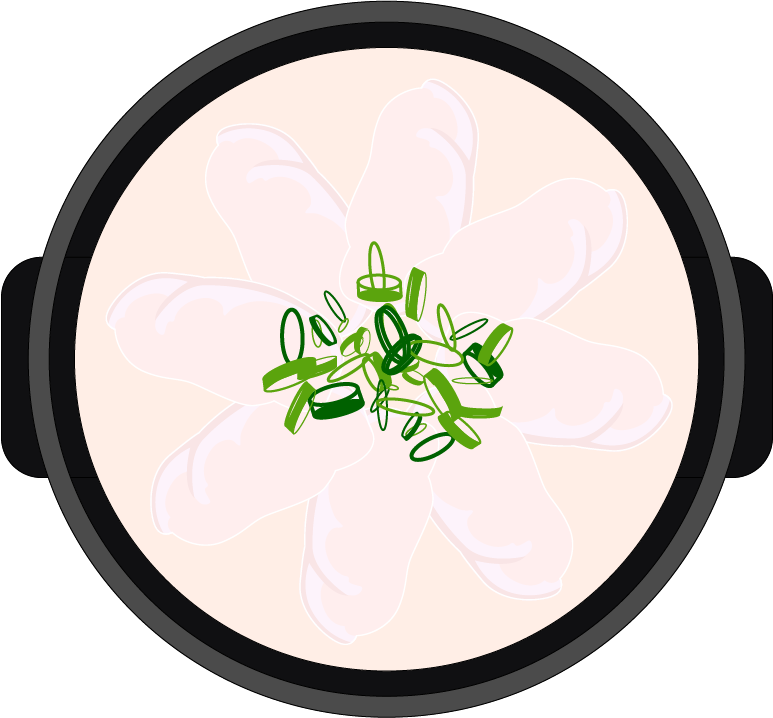

깊은 맛을 낼 수 있도록
사골을 잘 담궈주세요!!


 


국밥은 어쩌다
가성비 음식이 되었을까요?
돼지국밥은 서민들의 쓰린 속을 시원하게 풀어주는 해장 음식으로 속을 든든하게 하는 한 끼 식사인 서민음식으로 자리 잡았습니다. 돼지뼈와 내장, 수육 등을 이용해 깊고 진한 맛을 가지며 쇠고기보다 돼지고기의 소비가 많아 돼지고기의 수급이 원활하고 고기를 먹고 난 부산물인 뼈를 사용하여 가격이 저렴합니다. 또한 칼슘, 단백질 등 영양소가 많이 함유되어 영양 면에서도 우수해 오늘날 가성비 음식으로 자리메김 하게 되었다고 합니다.
국밥에 뚝배기를 사용하는 이유!
돼빨리 끓고 빨리 식는 금속으로 만든 냄비와는 달리 열 전도율이 낮은 재질 특성과 열에 버텨야 하는 그릇의 목적상 두께가 금속제 그릇보다 상당히 두꺼운데, 이러한 특징이 합쳐져 끓는 속도가 느리지만 식는 속도도 역시 느립니다. 이러한 뚝배기의 특성 때문에 오랫동안 뜨끈-하고 든든-하게 먹을 수 있도록 국밥과 천생연분 이랍니다!
기호에 맞도록 양념을 추가해주세요!
- 새우젓
- 다대기
- 후추

뜨뜻-하고 든든-한
돼지국밥 대령이요!
사골을 너무 오랫동안 우려 텁텁하지만 돼지고기의 부드러움과 다대기가 그 맛을 잡아준다. 새우젓을 한 번쯤 넣었다면 어땠을까? 약간은 싱겁다. 이 국밥은 100점 만점에 65점.